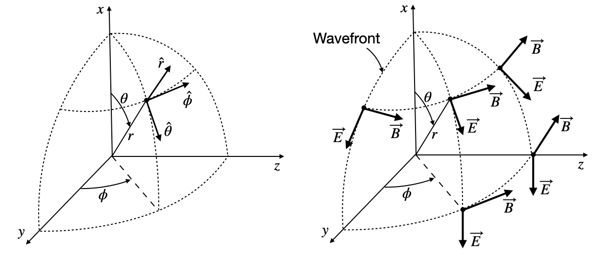

This page was generated from `/home/lectures/exp3/source/notebooks/L8/Wave Optics.ipynb`_.

Wave Optics¶
Wave optics extends our insight into optics with the help of a wave description. Light is able to interfere or to be diffracted at edges and it reveals specific colors in the visible range, where are not able to take account of that with the help of geometrical optics. The spectrum of electromagnetic waves extends over a huge range of frequencies and only a tiny fraction of it is related to the visible region.
|
|---|
Fig.: Electromagnetic Spectrum with its different regions. |

In the following, we would like to introduce wave by discarding the fact, that light is related to electric and magnetic fields. This is useful as the vectorial nature of the electric and magnetic field further complicates the calculations, but we do not need those yet. Accordingly we also do not understand how light really interacts with matter and we therefore have to introduce some postulates as well.
Postulates of Wave Optics¶
A wave corresponds to a physical quantity which oscillates in space and time. Its energy current density is related to the square magnitude of the amplitude.
Wave equation¶
where
is the Laplace operator. The wave equation is a linear differential equation, which means that the superposition principle is valid. This means, that if we have found two solution \(u_1(\vec{r},t)\) and \(u_2(\vec{r},t)\) being solutions of the wave equation, then \(u(\vec{r},t)=a_1 u_1(\vec{r},t)+a_2*u_2(\vec{r},t)\) is a solution as well (\(a_1,a_2\) being constants)
Intensity of waves¶
which is given in units \(\left[\frac{W}{m^2}\right]\). The \(\langle \ldots \rangle\) denotes a time average over one cycle of the oscillation of \(u\). This is extremely short. For light of 600 nm wavelength, one cycle just lasts 2 femtoseconds.
The optical power of a wave is obtained when integrating the intensity over an area \(A\).
Monochromatic wave¶
A monochromatic wave is obtained whem only one single frequency \(\omega\) is contained in a wave. For this to be true, the wave has to be inifnitely long in time and the oscillation should not have any phase disturbances (such as jumps). A monochromatic wave is given by.
where
\(a(\vec{r})\) is the amplitude
\(\phi(\vec{r})\) is the spatial phase
\(\omega\) is the frequency
|
|---|
Fig.: Representation of a wavefunction over time (constant position) denoting the phase \(\phi\) and the period \(T=1/\nu\). |

Complex Amplitude¶
We may also introduce a complex representation of a wave by
which is called the complex wavefunction.
|
|---|
Fig.: Phasor diagram of the complex amplitude \(U(r)\) (left) and \(U(t)\) (right). |

A phasor displays the complex amplitude with magnitude and phase as a vector in the complex plane.
This complex wavefunction is related to the real wavefunction by
but allows us much easier calculations. In the same way as for real wavefunction we may now also write a wave equation for the complex wavefunction
We may now further split up the complex wavefunction into a spatial and temporal dependence
where
The quantity \(\phi\) resembles to be the spatial part of the phase of a wavefunction. The intensity of the wave if further now just given by
Wavefronts¶
Wavefronts are the surfaces in space where the phase \(\phi(\vec{r})={\rm const}\). This constant can be chosen such that we always denote the maximum of the spatial amplitude, i.e. \(\phi(\vec{r})=2\pi q\), where \(q\) is an integer. We will later have a look how those wavefronts propagate in time. We can also define a vector which is perpendicular to the wavefront. This is given by
Plane Waves¶
A plane wave is a solution of the homogeneous wave equation and is given in its complex form by
\begin{equation} U=Ae^{-i\vec{k}\cdot \vec{r}}e^{i\omega t} \end{equation}
where the two exponentials contain an spatial and a temporal phase. \(A\) denotes the amplitude of the plane wave and can be a complex number as well. The plane is defined by the shape of the wavefront which is given by \(\vec{k}\cdot \vec{r}=2\pi q + {\rm arg}{A}\), which is just the definition of a plane perpendicular to \(\vec{k}\). The planes are seperated by the wavelength \(\lambda=2\pi /k\). The wavenumber \(k\) is therefore the spatial frequency of the oscillation in position of a wave.
The spatial amplitude of the plane wave is given by
\begin{equation} U(\vec{r})=Ae^{-i\vec{k}\cdot \vec{r}} \end{equation}
The propagation direction of the wave is defined by wavevector \(\vec{k}\). In vacuum, the wavevector is just real valued
\begin{equation} \vec{k}_{0}= \begin{pmatrix} k_{0x} \\ k_{0y}\\ k_{0z}\\ \end{pmatrix} \end{equation}
|
|---|
Fig.: Plane wave propagating along the horizontal direction. |

The wavevector is also proportional to the momentum of the wave, which will be important if we consider the refraction process a bit later. The magnitude of the wavevector is related wo the frequency
\begin{equation} k_{0}=\frac{\omega}{c_{0}} \end{equation}
This relation connects the momentum (\(k\)) to the energy \(\omega\) and is in general in physics called dispersion relation. Light in free space obeys a linear dispersion relation.
If we consider a wave propagating in a medium, the frequency of the wave \(\omega\) stays the same as this is defined by the source. Nevertheless the propagation speed of the wave changes, i.e.
and by a factor lower (the refractive index \(n\) of the medium). As a result, the wavelength of the wave changes in a medium and gets typically shorter for \(n>1\).
Correspondingly. The wavenumber gets larger,
.
The above graph shows a static snapshot of the plane wave at a time \(t=0\). The animation below shows the plane wave propagation of a \(\lambda=532\) nm wave.
Fig.: . Propagating spherical waves for positive and negative wavenumber. |
A reversal of the wavevector to its negative value, changes the propagation direction to the opposite direction.
Spherical Waves¶
A spherical wave is as well described by two exponentials containing the spatial and temporal dependence of the wave. The only difference is, that the wavefronts shall describe spheres instead of planes. We therefore need \(|\vec{k}||\vec{r}|=k r=const\). The product of the magntitudes of the wavevector and the distance from the source are constant. If we further generalize the position of the source to \(\vec{r}_{0}\) we can write a spherical wave by
\begin{equation} U=\frac{A}{|\vec{r}-\vec{r}_{0}|}e^{-i k|\vec{r}-\vec{r}_{0}|} e^{i\omega t} \end{equation}
Note that we have to introduce an additional scaling of the amplitude with the inverse distance of the source. This is due to energy conservation, as we require that all the energy that flows through all spheres around the source is constant.
The line plots below show that the field amplitude rapidly decays and the intensity follows a \(1/r^2\) law as expected. The slight deiviation at small distances is an artifact from our discretization. We used the image above to extract the line plot and therefore never exactly hit \(r=0\).
 |
|---|
Fig.: Spherical wave amplitude and intensity of the spherical wave as a function of distance from the source. |
We can also visualize the animation our spherical wave to check for the direction of the wave propagation.
|
|---|
Fig.: . Propagating spherical waves for positive and negative wavenumber. |
Interference¶
Interference is one of the most important phenomena in physics. It is a realization of the superposition principle which is valid, if the differential equation which produce the solutions is linear as we already stated above.
Let’s assume we have two solutions of the wave equation \(U_1(\vec{r})\) and \(U_2(\vec{r})\). The superposition allows to add them to get a new solution \(U(\vec{r})\)
To calculate the intensity of the total wave, we have to calculate therfore the magnitude square of the sum of the two waves.
\begin{eqnarray} I &= &|U|^2\\ &= &|U_1+U_2|\\ &= &|U_1|^2+|U_2|^2+U^{*}_1 U_2 + U_1 U^{*}_1 \end{eqnarray}
which results in two terms, which resemble to be the sum of the two waves. Yet, there are two additional cross-term, which say that the resulting intensity is not just the sum of the two intensities in case the two terms do not cancel out.
If we use
we can express the individual waves as
and
where the exponential term with \(\phi_1,\phi_2\) denotes the phase of the two spatial amplitudes. Taking the magnitude square of the sum of those two wave we then obtain
with
which now clearly tells us, that the total intensity of two waves in not the sum of the two intensities, but contains an additional term, which depends on the phase difference between the two wave. This term \(2\sqrt{I_1 I_2}\cos(\Delta \phi)\) is called the interference term.
Let us assume for an example two wave, which originally have the same intensity, i.e. \(I_2=I_1=I_0\). If we insert this into the abocve formulas we obtain for the total intensity
This is quite interesting as we obtain the follwing results for specific phase shifts
Contructive Interference
\(\Delta \phi=0,2\pi,2\pi m\): \(I=4I_{0}\), where m is an integer
|
|---|
Fig.: Constructive interference of two wave (left, middle) and the sumn of the two wave amplitudes. |


Constructive Interference
Constructive interference between wave occurs when the phase difference between the waves is a multiple of \(2\pi\).
where \(m\) is an integer number.
Destructive Interference
\(\Delta \phi=\pi,3\pi,(2m-1)\pi\): \(I=0\), where m is an integer
|
|---|
Fig.: Destructive interference of two wave (left, middle) and the sumn of the two wave amplitudes. |


Destructive Interference
Destructive interference between wave occurs when the phase difference between the waves is an odd multiple of \(2\pi\).
where \(m\) is an integer number.
Sum of both Intensities
\(\Delta \phi=\pi/2,3\pi/2,(2m-1)\pi/2\): \(I=2I_0\), where m is an integer
Phase Difference and Path Difference
Note that a phase difference can be caused by a difference in the path length the two waves have to travel. This pathlength difference \(\Delta s\) then correponds to a phase amngle difference of \(k\Delta s=2\pi\Delta s /\lambda\), where \(k\) is the wavenumber. A pathlength difference, which is a multiple of \(\lambda\), will thus correspond to a phase angle difference, which is a multiple of \(2\pi\).
Interference may give rise to distinct patterns in space, which can be used for lithography purposes, for example. If we superpose two plane waves with different directions of the wave propagation, we will in general obtain a stripe like intensity pattern as depicted below.
|
|---|
Fig.: Interference of two plane waves propagating under an angle of 45\(^{\circ}\). The two left graphs show the original waves. The two right the total amplitude and the intensity pattern. |

The interference of the two plane wave shown above leads also to stripe pattern on a screen (think of the intensity pattern at z=10 µm for example).
If we use a spherical and a plane wave, we will find a circular shaped interference intensity due to the curvature of the wavefronts of the spherical wave.
|
|---|
Fig.: Interference of a spherical wave and a plane wave (left amplitude, right intensity). |